Fourth edition. Each topic covers the cause, clinical features, investigations and management used in our hospitals, with the key points for the exam.
49 topics · 341 pages
Your progress
The book
Tap a chapter to open
Study tools
Flashcard of the day
1 / 22
0:00
0:00
Lecture
Highlights & notes
Contents
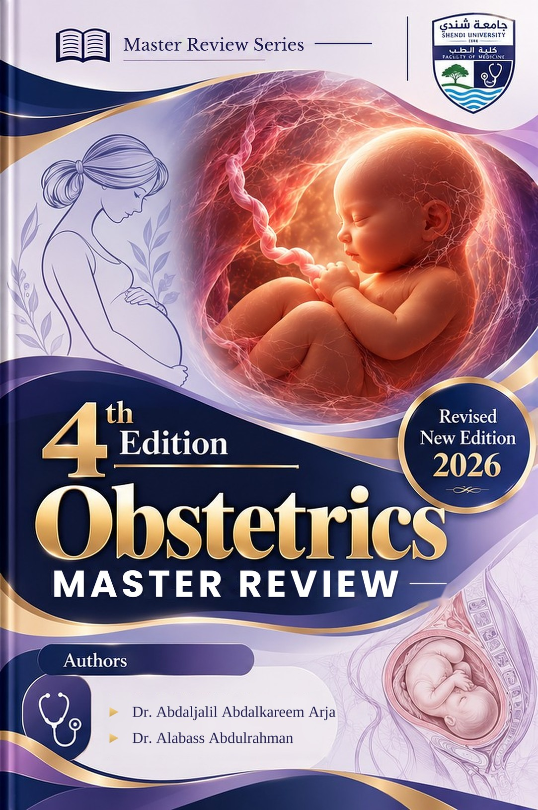
Student Master Note series
ABOUT THE AUTHORSعن المؤلفين
Dr. Abdaljalil Abdalkareem ArjaDr. Alabass AbdulrahmanShendi University · Faculty of Medicine
نحنا منو
نحنا خرّيجين كلية الطب، جامعة شندي (Shendi University)، ومؤسّسين سلسلة Student Master Note. قعدنا سنين في قاعات الدراسة وسهر الليالي قبل الامتحانات، وشفنا بعيونا الطالب بيضيّع وقته كيف بين المراجع الكبيرة والملخّصات المشتّتة. عشان كدا قرّرنا نعمل المرجع الكان نفسنا يكون معانا ونحنا طلاب.
عن الكتاب
Obstetrics Master Review هو الطبعة الرابعة من كتاب التوليد بتاعنا. بنيناه على الطبعة التالتة، وحدّثناه على حسب البروتوكولات السودانية وآخر توصيات WHO وRCOG. كل موضوع في صفحات قليلة: ليه بيحصل، تلقى شنو في الكشف، والجرعات الشغّالة في مستشفياتنا. ومعاه flashcards، وبنك أسئلة (QBank)، ومحطّات OSCE بصور حقيقية، ودليل كامل لأدوية التوليد.
أهدافنا
الطالب يفهم المرض قبل ما يحفظه: ليه بيحصل، بيظهر كيف، ونعمل شنو.
نربط المراجع العالمية بالواقع البنشوفه في عنابر الولادة في السودان.
نوفّر وقت الطالب ونركّز على البيجي في الـMCQs والـOSCE.
المعلومة تكون صاح ومحدّثة على حسب آخر الـguidelines.
نيّتنا
نتمنّى الشغل دا يكون خالص لوجه الله، وعلم يُنتفع به، وصدقة جارية لينا ولأهلنا ولأساتذتنا.
لو لقيت فيه فايدة ما تنسانا من دعوة صالحة، ولو لقيت غلطة كلّمنا عشان نصلّحها في الطبعة الجاية.
خطّتنا الجاية
نكتّر الـQBank بأسئلة وحالات جديدة.
كتب تانية في سلسلة Student Master Note بنفس الطريقة.
نحدّث الكتاب طوالي بملاحظاتكم، إنتو الطلاب والأساتذة.
كلمة في حقّ المؤلّفين
الزول البيتابع الشغل في الكتاب دا من جوّا بيشوف دكاترة شباب ما بيرضوا بالساهل: بيراجعوا كل سطر، وبيسألوا عن كل معلومة: صاح ولا لا؟ بتجي في الامتحان؟ ودا فعلاً البنعمله في عنابر الولادة عندنا؟ رتّبوا الصفحات وصمّموها مرّة ورا مرّة لحدّي ما بقت زي ما دايرينها لزملائهم. الكتاب دا ثمرة إيمانهم إنّو العلم بيتشارك، وإنّو طالب الطب في السودان يستاهل أحسن الأدوات.
الكتاب دا شغّال زي أي تطبيق في موبايلك. ما محتاج تعرف حاجة في التكنولوجيا: الأزرار التحت في الشاشة بتوديك لكل حتّة، وكل زر عليهو صورة صغيرة. الصفحتين ديل بيشرحوا ليك كل زر خطوة خطوة.
الأزرار التحت في الشاشة
1
الرئيسية Home
هنا تلقى فصول الكتاب، وتقدّمك في القراية، وكروت اليوم. دوس على أي فصل عشان يفتح ويوريك مواضيعو.
2
اقرا Read
بيفتح ليك الكتاب في آخر صفحة كنت فيها. قلّب الصفحات بإصبعك لفوق ولتحت زي ما بتقلّب في الواتساب.
3
الكروت Cards
سؤال قصير على وش الكرت. دوس عليهو بيتقلب ويوريك الإجابة. لو عرفتها دوس Knew it، لو ما عرفتها دوس Again.
نصيحة: لو الكتاب فتح ليك في متصفّح زي Chrome، دوس على النقاط التلاتة فوق واختار Add to Home screen. بيظهر الكتاب أيقونة في موبايلك زي أي تطبيق، ويفتح بدون إنترنت.
Pregnancy causes physiological changes in almost every organ system of the mother. These changes have two main purposes: to supply the growing fetus with oxygen and nutrients, and to prepare the mother for the blood loss that occurs at delivery.
Most of the changes are produced by two hormones made by the placenta. Progesterone relaxes smooth muscle (in blood vessels, the gut and the ureters). Oestrogen stimulates the growth of the uterus and breasts and increases the production of plasma proteins and clotting factors. All of these changes return to normal within about 6 weeks after delivery, a period called the puerperium.
A good knowledge of these normal changes is important for two reasons. First, it prevents normal findings in a pregnant woman from being mistaken for disease. Second, it explains why some diseases, such as heart disease and malaria, become more dangerous during pregnancy.
2. Genital tract
The uterus enlarges from about 50–70 g before pregnancy to about 1000 g at term, and its volume increases to about 5 litres. In early pregnancy the growth is caused by enlargement of the muscle cells (hypertrophy) under the effect of oestrogen; later, the uterine wall is mainly stretched by the growing fetus. The blood flow to the uterus rises to about 500–750 mL per minute at term, which is 10–15% of the cardiac output. This high blood flow explains why bleeding after delivery (postpartum haemorrhage, PPH) can kill a woman within minutes.
From the middle of pregnancy the uterus contracts irregularly and painlessly. These are called Braxton Hicks contractions, and they do not open the cervix. In the third trimester the narrow part of the uterus above the cervix (the isthmus) stretches to form the lower uterine segment.
Structure
Normal change in pregnancy
Cervix
Becomes soft (Goodell's sign) because of increased blood supply and water content. A thick mucus plug fills the cervical canal and protects the uterus from infection.
Vagina
Becomes bluish in colour from congestion (Chadwick's sign, at about 8 weeks). White vaginal discharge increases (leucorrhoea). The vaginal fluid is acidic because of lactobacilli, but candida infection is more common than outside pregnancy.
3. Heart and circulation
The circulation changes early and markedly. The aim is to carry more blood to the uterus, placenta, kidneys and skin. The figure below shows how the main measurements change during pregnancy.
The circulation in pregnancy · most of the rise in cardiac output is reached by 20–24 weeks. Plasma volume rises more than red cell mass, so the haemoglobin concentration falls.
The stroke volume rises first; later the heart rate also rises, by 10–15 beats per minute. Cardiac output rises again during labour and is highest immediately after delivery. For this reason a woman with heart disease is most likely to develop heart failure at 24–28 weeks, during labour and just after delivery.
Peripheral resistance falls
Progesterone dilates the blood vessels, so the blood pressure (BP) falls in the second trimester and returns to the booking level by term. A BP higher than the booking value is therefore abnormal.
Venous pressure in the legs rises
The enlarged uterus presses on the inferior vena cava (IVC) and the iliac veins. This causes ankle oedema, varicose veins and haemorrhoids (piles).
Supine hypotension
After 20 weeks, lying flat on the back allows the uterus to compress the IVC. Less blood returns to the heart, so the woman may feel dizzy, her BP falls and the fetus may become distressed. This is prevented by a left lateral tilt of 15°.
Heart and ECG
The heart is pushed upwards and to the left, so the apex beat moves to the 4th intercostal space. A soft ejection systolic murmur and a third heart sound are normal. The ECG may show left axis deviation and a small Q wave in lead III. A diastolic murmur is never normal and must be investigated.
Clinical picture
Physiological anaemia
Plasma volume +45%+red cell mass +25%+normal MCV=Dilution
Distinguishing features · Normal or not?
Soft ejection systolic murmurNormal
Mid-diastolic murmur with breathlessnessMitral stenosis
BP 105/60 mmHg at 22 weeksNormal fall
Feels faint when lying flat at 32 weeksSupine hypotension
Clinical scenario
A woman at 30 weeks has a haemoglobin of 11.2 g/dL and a normal MCV (88 fL). What is the explanation?
Haemodilution: physiological anaemia of pregnancy.
4. Blood and clotting
Physiological anaemia. The plasma volume rises by about 45%, but the red cell mass rises by only about 25%. The blood is therefore diluted, and the haemoglobin (Hb) concentration falls to about 11 g/dL, while the mean cell volume (MCV) stays normal. This is called physiological anaemia, or haemodilution. The total iron requirement of pregnancy is about 1000 mg. The white cell count (WBC) rises to as much as 15 × 10⁹/L, and higher in labour; the platelet count falls slightly. The erythrocyte sedimentation rate (ESR) is normally high in pregnancy, so it is not a useful test.
The hypercoagulable state. The levels of fibrinogen and of clotting factors VII, VIII and X rise, the natural anticoagulant protein S falls, and the breakdown of clots (fibrinolysis) is reduced. These changes protect the mother from bleeding at delivery. Together with slow venous flow in the legs, however, they increase the risk of venous thromboembolism (VTE) 4–6 times. The risk is highest in the weeks after delivery.
Progesterone stimulates the respiratory centre, so the woman breathes more deeply. The rise in ventilation is greater than the rise in oxygen use, which lowers the carbon dioxide level in her blood.
Tidal volume rises by 40%
The minute ventilation rises by 40–50%. The respiratory rate does not change, so a fast respiratory rate is a sign of illness and not of pregnancy.
PaCO₂ falls to about 4 kPa
(about 30 mmHg). This produces a compensated respiratory alkalosis: the kidneys excrete more bicarbonate to keep the pH normal. The low maternal carbon dioxide level helps carbon dioxide pass from the fetus to the mother.
Oxygen use rises by 20%
At the same time the functional residual capacity (FRC) falls by 20%, because the diaphragm is pushed up by about 4 cm. The woman therefore becomes hypoxic quickly when she stops breathing, for example during induction of general anaesthesia. She must be given oxygen before anaesthesia (pre-oxygenation).
Physiological breathlessness
Up to 70% of pregnant women feel short of breath. Physiological breathlessness occurs at rest or while talking, without cough, and with normal oxygen saturation and a normal examination. Breathlessness on mild effort or at night, or with low oxygen saturation, suggests disease: look for anaemia, heart disease or pulmonary embolism.
Clinical picture
Blood gas in pregnancy
PaCO₂ about 4 kPa+low bicarbonate+pH about 7.44=Compensated respiratory alkalosis
Clinical scenario
A woman at 30 weeks feels short of breath at rest. Her respiratory rate is 16, SpO₂ 99%, and the examination is normal. What is the next step?
Reassure her: this is physiological breathlessness.
6. Kidneys and urinary tract
The renal plasma flow rises by 50–75% and the glomerular filtration rate (GFR) rises by about 50%. As a result, the blood levels of creatinine, urea and uric acid fall. A creatinine value that is normal outside pregnancy (for example 90 µmol/L) is therefore raised in a pregnant woman and suggests kidney disease.
Glucose and protein in the urine
More glucose is filtered than the tubules can reabsorb, so glucose in the urine is common and does not prove diabetes; diabetes must be confirmed by a blood test (oral glucose tolerance test, OGTT). Protein excretion of up to 300 mg in 24 hours is normal; a higher amount is significant proteinuria.
Dilated ureters
Progesterone relaxes the ureters, and the uterus presses on them at the pelvic brim, more on the right side. Urine flows slowly, so bacteria in the urine without symptoms (asymptomatic bacteriuria) progress to kidney infection (pyelonephritis) in 20–30% of untreated women. All women should be screened and treated.
Frequency of micturition
Passing urine often is common in early pregnancy, when the uterus presses on the bladder, and again near term, when the fetal head enters the pelvis.
Creatinine 95 µmol/L at 30 weeksAbnormal: kidney disease
ALP three times the normal valueNormal (placental)
ALT 120 IU/L with itching at 34 weeksObstetric cholestasis
Glucose 1+ on urine dipstickCheck the blood glucose
7. Gastrointestinal system and liver
Progesterone relaxes the smooth muscle of the gut, so food moves more slowly through it. Most liver tests stay normal, so an abnormal liver test is an important finding.
Nausea and vomiting are most common at 8–12 weeks, when human chorionic gonadotrophin (hCG) is highest, and usually settle by 16–20 weeks.
The lower oesophageal sphincter relaxes, causing heartburn. The stomach empties slowly in labour, which increases the risk of aspiration of stomach contents under general anaesthesia.
Slow bowel movement causes constipation.
The gums become swollen and bleed easily (gingivitis), and some women produce excess saliva (ptyalism).
Alkaline phosphatase (ALP) rises 2–4 times, because the placenta produces it. This is normal.
Albumin falls because of dilution, which contributes to oedema and lowers the total calcium.
Transaminases (ALT, AST), bilirubin and bile acids do not rise. If they are raised, consider obstetric cholestasis, acute fatty liver of pregnancy (AFLP), HELLP syndrome or hepatitis.
The gallbladder empties slowly, so gallstones are more common.
8. Placental hormones
The placenta is an endocrine organ. Its hormones maintain the pregnancy and change the mother's metabolism so that the fetus receives enough glucose and nutrients. The figure shows how the main hormones change during pregnancy.
Hormone levels in pregnancy · hCG peaks early and then falls; human placental lactogen (hPL) rises with the size of the placenta and causes insulin resistance.
Human chorionic gonadotrophin (hCG) is made by the syncytiotrophoblast of the placenta. It keeps the corpus luteum of the ovary active, and the corpus luteum produces progesterone until the placenta takes over at 8–10 weeks. Removing the corpus luteum before this time causes miscarriage. hCG levels are very high in molar and twin pregnancies, which therefore cause more vomiting and may cause features of hyperthyroidism.
Chapter 1 · 1.1 Physiology of PregnancyHormones, Skin & Joints11
9. Endocrine glands and metabolism
Thyroid
The gland enlarges slightly because more iodine is lost in the urine. Oestrogen doubles the level of thyroxine-binding globulin (TBG), so total T4 rises, but free T4 stays normal. hCG acts on the TSH receptor, so TSH is low in the first trimester. Thyroid tests must therefore be interpreted with free T4 and trimester-specific ranges.
Pituitary
The gland doubles in size, mainly because the prolactin-producing cells enlarge. Prolactin rises about ten times to prepare the breasts for lactation. The enlarged gland is easily damaged by low blood pressure, so massive PPH can cause pituitary necrosis (Sheehan's syndrome).
Adrenal
Cortisol rises, which contributes to striae and insulin resistance. Aldosterone rises through the renin–angiotensin system, so more salt and water are retained.
Glucose metabolism
In the first half of pregnancy the mother stores fat, and her fasting glucose is lower than normal. In the second half, hPL, cortisol and progesterone cause insulin resistance, so glucose stays higher after meals and more passes to the fetus. This is why gestational diabetes usually appears at 24–28 weeks, the time when screening is done.
Immunity
Cell-mediated immunity is reduced so that the mother does not reject the fetus. As a result, malaria is more severe (parasites collect in the placenta), and some viral infections such as varicella and hepatitis E are more dangerous. Some autoimmune diseases, such as rheumatoid arthritis, often improve.
Lipids and calcium
Cholesterol and triglycerides rise. Calcium absorption from the gut increases (through vitamin D) to supply the fetal skeleton. Total calcium falls with albumin, but ionised calcium stays normal.
Clinical picture
Thyroid tests in early pregnancy
High hCG+low TSH+normal free T4=Normal: no treatment
Clinical scenario
At 16 weeks a woman's total T4 is high, while her free T4 and TSH are normal. What is the explanation?
Oestrogen doubles thyroxine-binding globulin, so the bound (total) T4 rises.
10. Skin, breasts and joints
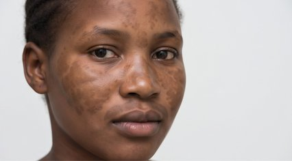
ChloasmaChloasma
a
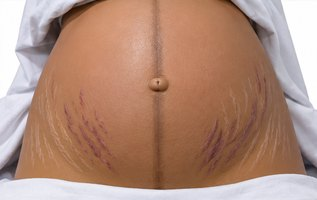
Linea nigraUmbilicusStriae gravidarumStriae gravidarum
b
Figure 1.1.1 (a) Chloasma: brown patches on the cheeks. (b) Linea nigra and striae gravidarum.
The skin changes are caused by higher levels of oestrogen, progesterone and melanocyte-stimulating hormone. Most of them fade after delivery.
Linea nigra: a dark line in the midline of the abdomen, from the pubis to the umbilicus and above.
Chloasma (melasma): brown patches on the cheeks and forehead, made worse by sunlight.
Striae gravidarum: stretch marks that are red-purple in the current pregnancy and silvery-white after it.
Spider naevi and palmar erythema, caused by oestrogen; they fade after delivery.
Breasts become tender from 6 weeks and enlarge; the areola darkens, small glands appear on it (Montgomery's tubercles), and colostrum may be expressed from mid-pregnancy.
Relaxin and progesterone loosen the pelvic joints, causing pain over the symphysis pubis and backache.
Lumbar lordosis increases, and fluid retention may compress the median nerve (carpal tunnel syndrome).
Hair stops shedding during pregnancy and falls out 2–4 months after delivery.
Chapter 1 · 1.1 Physiology of PregnancyWeight Gain & Normal Values12
11. Weight gain
A woman of normal weight gains about 12.5 kg during pregnancy, most of it in the second half, at about 0.5 kg per week. The recommended gain depends on her body mass index (BMI) at booking: a thin woman should gain more and an obese woman less. A sudden gain of 1 kg or more in a single week suggests fluid retention and should raise suspicion of pre-eclampsia.
BMI at booking
Recommended total gain
Where the weight goes (about 12.5 kg)
Under 18.5 (underweight)
12.5–18 kg
Fetus 3.5 kg, placenta 0.7 kg, amniotic fluid 0.8 kg, uterus 1 kg, breasts 0.4 kg, extra blood 1.5 kg, extra tissue fluid 1.5–2 kg and fat 3–4 kg.
18.5–24.9 (normal)
11.5–16 kg
25–29.9 (overweight)
7–11.5 kg
30 or more (obese)
5–9 kg
Clinical picture
Sudden weight gain
1 kg or more in a week+face and hand oedema+rising BP=Pre-eclampsia
12. Normal laboratory values in pregnancy
Because of the changes described in this topic, several laboratory values have different normal ranges in pregnancy. The most important ones are listed below.
Test
Not pregnant
Pregnant
Clinical meaning
Haemoglobin
12–15 g/dL
11 or more (10.5 or more in the 2nd–3rd trimester)
A lower value is anaemia (see 2.2)
White cell count
4–11 × 10⁹/L
up to 15; up to 25 in labour
A raised neutrophil count alone does not prove infection
Platelets
150–400 × 10⁹/L
slightly lower
Below 100 suggests HELLP syndrome or pre-eclampsia
Fibrinogen
2–4 g/L
4–6 g/L
A level of 2 g/L during PPH means it is being consumed (DIC)
Creatinine
60–110 µmol/L
below 75 µmol/L (about 0.4–0.8 mg/dL)
A higher value suggests kidney disease
Uric acid
0.2–0.35 mmol/L
lower
Rises in pre-eclampsia
Alkaline phosphatase
30–130 IU/L
up to 4 times higher
Comes from the placenta: normal
ALT and bilirubin
normal
unchanged
A raised value means liver disease
PaCO₂
4.7–6 kPa
about 4 kPa
A "normal" 5.5 kPa in an asthmatic woman means she is tiring
ESR
below 20 mm/h
up to 70 mm/h
Not useful in pregnancy
Normal change or disease?
Ankle oedema is normal, but oedema of the face and hands with a rise in BP suggests pre-eclampsia. Breathlessness at rest is normal, but breathlessness on mild effort or with a low oxygen saturation is not. A systolic murmur is normal, but a diastolic murmur is not. Itching of the palms and soles is not simply dry skin: check the bile acids.
Confirms viability; excludes twins and molar pregnancy
6. Differential diagnosis
UTI / pyelonephritis · gastroenteritis · hepatitis · peptic ulcer · thyrotoxicosis · molar pregnancy · DKA · raised ICP · red degeneration of fibroid · acute abdomen. Onset after 12 wk, pain, fever or headache = not HG.
7. Complications
Maternal
Wernicke encephalopathy (B1 lack: confusion, ataxia, eye signs) · hyponatraemia (corrected too fast → central pontine myelinolysis) · hypokalaemia · hypochloraemic alkalosis · Mallory-Weiss tear · VTE (dehydration + immobility) · liver and renal failure · malnutrition, depression
Fetal
Low birth weight / IUGR · fetal death if Wernicke develops
Best next step · low TSH in HG
Low TSH + high free T4 is usually gestational transient thyrotoxicosis: hCG stimulates the TSH receptor. No goitre, no eye signs. No antithyroid drugs; it settles as hCG falls (by about 20 wk).
Clinical picture
Wernicke
Confusion+ataxia+nystagmus=Thiamine IV now
Distinguishing features
HG on IV dextrose, now confused, ataxicWernicke: thiamine IV
HG, blood streaks after retchingMallory-Weiss tear
Chapter 3 · 3.1 Bleeding in Early PregnancyMiscarriage: Definition, Types & Causes75
4. Investigations
Speculum: os open or closed, local cause · CBC · blood group + Rh · urine · malaria film · TORCH in 1st-trimester loss only. Missed on TVS: CRL ≥ 7 mm, no heart; or mean sac ≥ 25 mm, no embryo.
5. Management by type
Threatened
Reassure · no admission if she lives near a hospital · bed rest and progesterone are unproven · no intercourse until the bleeding stops · later in pregnancy she has a higher risk of APH and preterm labour
Complete
Confirm the uterus is empty on scan · pregnancy test should be negative after 2–3 wk
Inevitable, incomplete, missed: three options
Expectant
Wait 2–4 wk for the products to pass · works best < 8 wk · missed: wait no longer than 4 wk (a dead fetus kept longer can cause DIC) · she may bleed or get infected while waiting
Medical
Misoprostol (table below) · preferred from 12 wk · may fail; side effects: cramps, diarrhoea, fever
Surgical
MVA up to 12–14 wk, or D&E (dilatation and evacuation) later · definitive · the choice for heavy bleeding, shock or sepsis
Clinical picture
Which method?
Heavy bleed+shock or sepsis=Surgical: MVA
Distinguishing features
Incomplete, BP 80/50, heavy bleedResuscitate + evacuate
Missed, 9 wk, stable, no surgeryMisoprostol
Amenorrhoea after repeated D&CAsherman syndrome
6. Misoprostol doses
Use
Dose
Incomplete, < 13 wk
600 µg oral or 400 µg SL once
Missed, < 13 wk
800 µg PV or 600 µg SL · repeat after 3 h if needed
13–24 wk (missed, IUFD)
400 µg SL/PV every 3 h until passed
Priming before evacuation
400 µg PV 3 h before: softens and opens the cervix, so dilatation is easier and the cervix tears less
Chapter 3 · 3.1 Bleeding in Early PregnancyManagement of Miscarriage76
Clinical scenarios
Missed miscarriage at 9 wk, stable, wants tablets. Dose?
Misoprostol 800 µg PV (or 600 µg SL); repeat after 3 h if needed.
MVA planned at 11 wk in a nullipara. How do you protect the cervix?
Priming: misoprostol 400 µg PV 3 h before.
7. Surgical evacuation: MVA
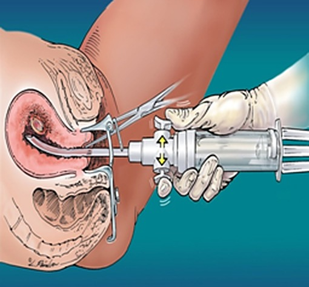
CannulaTenaculumHand syringe
Figure 3.1.1MVA: speculum in, tenaculum on the cervix, cannula in the uterus; the hand syringe makes the suction
Manual vacuum aspiration (MVA): a plastic cannula is passed through the cervix and a 60 mL hand syringe creates the suction: no electricity needed. Used up to 12–14 wk, under a paracervical block + analgesia. Prime the cervix first, especially in a nullipara or near 12 wk.
D&E (dilatation and evacuation) with forceps after 14 wk, in theatre.
Cause: usually an unsafe abortion, or an evacuation done with unclean instruments (no sterile technique), so germs from the vagina and outside reach the uterus.
Features: fever, rigors, offensive vaginal loss, lower abdominal pain, tender uterus. Clostridium perfringens (a gas-forming germ) breaks down red cells: jaundice and dark red-brown urine (haemoglobinuria) are warning signs of severe sepsis.
Manage: isolate, resuscitate · HVS + blood cultures, then ceftriaxone 1–2 g IV daily + metronidazole 500 mg IV 8-hourly · anti-tetanus · evacuate gently once antibiotics have started (the soft, infected uterus perforates easily).
Clinical picture
Septic miscarriage
Unsafe abortion+fever+offensive loss=Antibiotics, then evacuate
9. Recurrent miscarriage: ≥ 3 consecutive losses
1st trimester
Antiphospholipid syndrome
Parental chromosome translocation · PCOS
Poorly controlled DM or thyroid disease
TORCH infections do not cause recurrent loss: do not test for them
2nd trimester
Cervical weakness: painless loss, membranes bulge; each loss happens earlier in pregnancy than the one before
Uterine anomaly (septate, bicornuate): loss with painful contractions; each loss tends to happen later than the one before
APS:aspirin 75 mg daily + enoxaparin 40 mg SC daily from a positive pregnancy test. Cervical weakness:cerclage (a McDonald or Shirodkar stitch) at 12–14 wk; remove it at 37–38 wk, or at once if labour starts.
Anti-D in RhD-negative women
Before 20 wk:250 IU IM within 72 h for an ectopic, a partial mole, any miscarriage ≥ 10 wk, a surgical evacuation at any gestation, or heavy or repeated bleeding in threatened miscarriage.
From 20 wk:500 IU IM, then a Kleihauer test to measure how much fetal blood entered her circulation and give extra anti-D if needed. If Kleihauer is not available: give 1500 IU.
Distinguishing features
Fever + jaundice, dark urineClostridium sepsis
Painless losses, each earlierCervical weakness
Losses with pain, each laterUterine anomaly
RhD-negative, MVA at 8 wkAnti-D 250 IU
Clinical scenarios
3 losses at 8–10 wk, lupus anticoagulant +. Treatment next pregnancy?
Aspirin 75 mg + LMWH.
Painless 2nd-trimester losses, each earlier than the last. Cause?
Cervical weakness: cerclage at 12–14 wk.
Key numbers
< 24 wk
Miscarriage (before viability)
15–20%
Known pregnancies that miscarry
≈ 50%
1st-trimester losses: chromosomal
7 mm
CRL, no heart: missed
25 mm
Mean sac, no embryo: missed
≥ 3
Consecutive losses: recurrent
4 wk
Max wait in missed: DIC risk
800 µg
Misoprostol PV: missed < 13 wk
600 µg
Misoprostol oral: incomplete
400 µg
PV, 3 h before: priming
12–14 wk
MVA upper limit
60 mL
MVA hand syringe
≥ 3
Consecutive losses: recurrent
12 wk
Apart: repeat APS antibodies
12–14 wk
Cerclage timing
37–38
Weeks: remove the stitch
250 IU
Anti-D before 20 wk
1500 IU
Anti-D from 20 wk, no Kleihauer
Ectopic Pregnancy
10. Definition & risk factors
Ectopic pregnancy:implantationoutside the uterine cavity; the ampulla of the tube is the commonest site. Positive hCG + empty uterus = ectopic until proven otherwise.
Risk factors:PID · previous ectopic · tubal surgery · pregnancy with an IUCD in place or on the POP · IVF · endometriosis.
Chapter 3 · 3.1 Bleeding in Early PregnancyEctopic Pregnancy78
Clinical scenarios
hCG 2500, empty uterus on TVS. Interpretation?
Above the discriminatory zone: ectopic until proven otherwise.
Methotrexate given. hCG day 4: 1800, day 7: 1700. Next?
Fall < 15%: second dose or surgery.
11. Clinical features
Amenorrhoea 6–8 wk + lower abdominal pain + dark spotting · shoulder-tip pain, fainting (blood in the abdomen) · cervical excitation (pain when the cervix is moved), adnexal mass. Fate: tubal abortion (expelled from the tube end) or rupture.
12. Investigations
TVS: empty uterus, adnexal mass, free fluid · β-hCG twice, 48 h apart: in a normal intrauterine pregnancy it rises by ≥ 63%; in an ectopic it usually rises less than this, stays flat (plateau) or falls slowly · laparoscopy if still unclear. DDx: miscarriage, ovarian cyst accident, PID, appendicitis.
Clinical picture
Ectopic pregnancy
Pain+spotting+empty uterus=Ectopic
Distinguishing features
Empty uterus, hCG3000, stableMethotrexate
Same, but live embryo in the tubeSurgery
Pain, shock, fluid in the pelvisLaparotomy now
13. Treatment
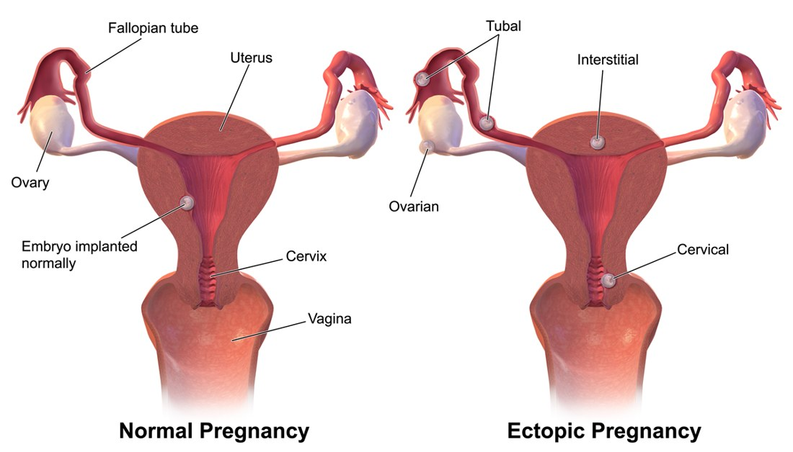
Figure 3.1.2Normal pregnancy vs tubal ectopic: the embryo implants in the tube
Methotrexate50 mg/m² IM, one dose. Check hCG on day 4 and day 7: success = the day-7 level is at least 15% lower than day 4; then weekly until negative. If it falls less: a second dose or surgery.
Surgery (laparoscopy):salpingectomy if the other tube is healthy; salpingotomy if the other tube is damaged (follow hCG to make sure no tissue is left).
Ruptured: shock → resuscitate and go to laparotomy now.
Hydatidiform mole: an abnormal pregnancy in which the placental villi swell into grape-like fluid sacs and the trophoblast overgrows, making very high hCG. It can turn into a persistent tumour (GTN) or choriocarcinoma.
Complete mole
Partial mole
Genetics
Empty ovum + 1 sperm, doubled: 46,XX
Normal ovum + 2 sperm: 69,XXY
Fetus · uterus
No fetus · large for dates
Abnormal fetus · ≤ dates
Malignant risk
≈ 15%
≈ 0.5%
Clinical picture
Complete mole
Very high hCG+large uterus+snowstorm=Complete mole
15. Clinical features & diagnosis
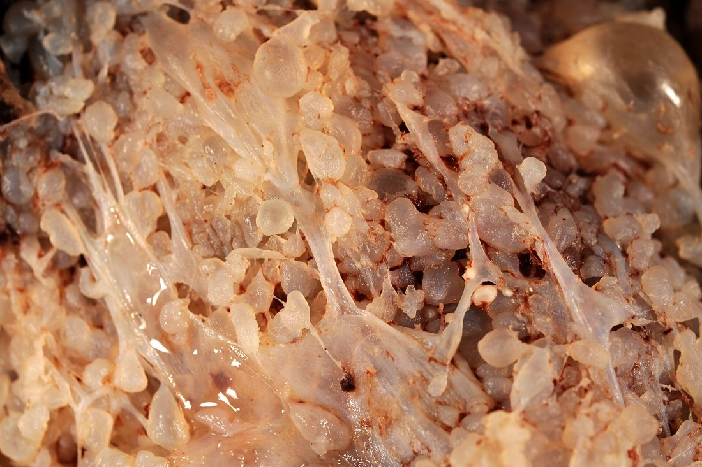
Grape-like vesicles
Figure 3.1.3Complete mole: grape-like vesicles, no fetus
Features: bleeding, grape-like vesicles passed · severe vomiting (hyperemesis) · pre-eclampsia before 20 wk · hyperthyroid features · theca lutein cysts on both ovaries · uterus large, soft and doughy, with no fetal heart (FH).
Scan:snowstorm pattern, no fetus · Bloods:hCG, TFT · CXR for lung spread.
Distinguishing features
BP 160/110 at 14 wkSuspect mole
Vomiting, uterus large for dates, no FHComplete mole
After mole: haemoptysis, rising hCGChoriocarcinoma
16. Management & follow-up
Suction evacuation after gentle dilatation; no misoprostol beforehand; oxytocin only once the uterus has started emptying. Send the tissue for histology, then follow hCG:
No pregnancy until follow-up ends (a new pregnancy raises hCG and hides a recurrence): use condoms or the pill; avoid an IUCD until hCG is normal.
Clinical scenario
After a complete mole, hCG plateaus for 3 weeks. Next?
Persistent GTN: score with FIGO, methotrexate if ≤ 6.
Chapter 4 · 4.1 Normal LabourDefinition, Onset & Stages110
4.1Normal Labour
1. Definition
Labour = regular painful contractions that cause progressive effacement and dilatation of the cervix, ending in expulsion of the fetus and placenta.
Normal labour = spontaneous onset at term (37–42 wk) · single fetus · cephalic vertex · through the birth canal · lasts 3–18 h · no complications for mother or baby.
2. Onset and diagnosis of labour
Diagnose labour by painful regular contractions + a changing cervix. Supporting signs: show (blood-stained mucus plug) and a bag of forewaters bulging in contractions.
Frequency and duration: felt by hand · pressure: needs CTG / internal catheter.
Clinical picture
Efficient contractions
3–5 / 10 min+40–60 s+40–60 mmHg=Good power
Clinical scenario
Six contractions in 10 min on oxytocin. Two dangers?
Fetal hypoxia and uterine rupture: stop oxytocin.
5. Power: the two segments
Upper segment · active
Thick muscle contracts and retracts: fibres stay a little shorter after each contraction, so the cavity gets smaller and pushes the fetus down.
Lower segment · passive
Thin, stretches and is pulled up over the head; the cervix effaces and dilates. The junction is the physiological retraction ring.
Passenger · the fetal skull on VE:posterior fontanelle (small, Y-shaped, 3 sutures) marks the occiput and gives the position · anterior fontanelle (bregma, diamond, 4 sutures) is felt easily when the head is deflexed.
Ridge between segments, normal labourPhysiological ring
7. Passage: diameters of the pelvis
Level
AP
Transverse
Widest
Inlet
11 cm (true conjugate)
13 cm
Transverse: head enters transverse
Mid-cavity
12 cm
12 cm · spines 10.5
Round: head rotates here
Outlet
13 cm
11 cm (intertuberous)
AP: head leaves AP
Clinical pelvimetry: diagonal conjugate 12.5 cm (promontory not reached = adequate inlet) · spines not prominent · subpubic arch takes 2 fingers.
8. Engagement & Mechanism of Labour
Effects on the mother: 1st stage small · 2nd stage ↑ pulse, BP, conjunctival congestion, minor tears · 3rd stage blood loss (placenta, episiotomy).
9. Engagement
The widest transverse diameter (biparietal, 9.5 cm) has passed the pelvic inlet = head 2/5 or less palpable abdominally. Primi: about 2 wk before term (a high head at term in a primi → consider CPD, praevia, wrong dates). Multi: often only in labour.
Abdomen · fifths palpable
Fingers' breadths of head above the brim: 5/5 free → 0/5 deep in the pelvis. Not misled by caput.
Vaginal · station
Lowest bony point of the head vs the ischial spines (0): −5 to +5 cm. Caput can make it look lower.
Chapter 4 · 4.1 Normal LabourEngagement & Mechanism of Labour113
10. Mechanism of labour: cardinal movements
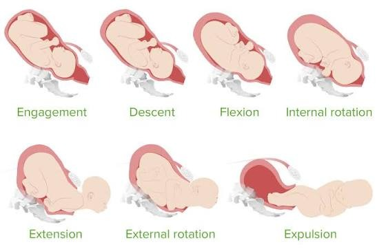
Figure 4.1.1Cardinal movements: head enters the inlet transverse → flexes (SOB 9.5 cm) → occiput turns 1/8 forward at the pelvic floor → born by extension under the symphysis → restitution → external rotation brings the shoulders AP; anterior shoulder first
Distinguishing features
Head 5/5 palpable, primi, 39 wkNot engaged: CPD? praevia?
Swelling crosses sutures, gone in 2 daysCaput succedaneum
Head untwists after it is bornRestitution
Occiput turns under symphysisInternal rotation
Clinical scenario
Scalp swelling stops at the suture lines and grows over day 2. Diagnosis?
Cephalhaematoma (subperiosteal), not caput.
11. Why the head flexes
Spine joins the skull nearer the occiput
Push from above → occiput leads
SOB 9.5 cm presents: the smallest
Deflexed: OF 11.5 cm → slow labour
12. Effects on the fetus
Moulding: skull bones overlap
Caput: scalp oedema, crosses sutures, gone in days
Bad moulding + caput = obstruction
Transient FHR dips (head compression)
13. Admission
History: onset and frequency of pains, show, leaking liquor, fetal movements, antenatal record (risk factors, previous CS). Examination: pulse, BP, temperature, pallor · fundal height, lie, presentation, fifths palpable, contractions, FHR · vaginal exam:dilatation, effacement, station, position, membranes, liquor, pelvis. Decide: low or high risk?
Support, breathing → paracetamol → pethidine50–100 mg IM (not near birth: neonatal depression) → epidural
Exam trap
Do not do routine ARM, enema, shaving or oxytocin in normal labour. ARM ± oxytocin is for slow progress, not for every woman.
Clinical picture
Fetal monitoring
Low risk→auscultation·high risk→Continuous CTG
Clinical scenario
Low-risk woman in active labour. How do you monitor the fetus?
Intermittent auscultation every 15–30 min, after a contraction.
15. Management of the 2nd stage
Diagnosis: full dilatation on vaginal exam; clues: urge to push, anus gaping, head visible. Fetus:FHR every 5 min (low risk) or continuous CTG (high risk). Mother: pulse, BP, exhaustion, bladder.
Primi2 h · 3 h with epidural
Multi1 h · 2 h with epidural
Not deliveredDelay: instrumental or CS
Push with contractions only, in a position she likes; lithotomy for instruments.
Crowning: one hand keeps the head flexed and slow, the other supports the perineum (Ritgen). Decide on episiotomy now.
Head born → feel for cord round the neck (loosen, or clamp and cut if tight) → wait for restitution.
Next contraction: gentle downward traction for the anterior shoulder, then upward for the posterior; body follows.
Baby on mother's chest, dry, Apgar at 1 and 5 min.
Episiotomy · not routine
Indications: tight perineum about to tear badly · instrumental delivery · fetal distress (shorten 2nd stage) · shoulder dystocia · breech. Mediolateral at crowning, after local anaesthetic.
Distinguishing features
Primi, fully dilated 1 h, pushing wellContinue, normal
Multi, fully dilated 1 h, no epiduralDelay: assess for instruments
Head born, tight cord round neckClamp twice and cut
Ventouse planned in a primiMediolateral episiotomy
Chapter 4 · 4.1 Normal LabourManagement: Third & Fourth Stage115
16. Physiology of the 3rd stage
The uterus retracts; the placenta shears off through the spongy layer of the decidua. Crossed myometrial fibres kink the vessels: "living ligatures".
Schultze (≈ 80%): central separation, fetal shiny surface first, clot inside the membranes
Matthews Duncan (≈ 20%): edge first, maternal surface, more bleeding
Signs of separation
Fundus rises, firm, globular
Cord lengthens at the vulva
Gush of blood
17. Active management of the 3rd stage (AMTSL)
For every woman: less PPH and transfusion. Uterotonic + controlled cord traction + uterine massage.
AMTSL · Oxytocin 10 IU IM within 1 min of birth (no oxytocin: misoprostol 600 µg oral). Ergometrine 0.5 mg IM only if BP normal.
Controlled cord traction
Only with a contraction. Left hand above the pubis pushes the uterus up (Brandt–Andrews), right hand pulls the cord down and back.
Delayed cord clamping
Clamp at 1–3 min (or when pulsation stops) in a baby who is breathing: more iron stores, less anaemia. Clamp at once if the baby needs resuscitation.
Exam trap
Never pull the cord without a contraction and counter-pressure: risk of cord snap and uterine inversion. Exclude a second twin before any uterotonic.
Physiological management: no drug, late clamping, maternal effort; switch to active if bleeding. Retained placenta: not out at 30 min with AMTSL (60 min physiological) → empty bladder, oxytocin, manual removal.
Chapter 4 · 4.1 Normal LabourManagement: Third & Fourth Stage116
18. After the placenta
Check the placenta: cotyledons complete, membranes whole, vessels running off the edge (succenturiate lobe) · count vessels in the cord (2 arteries + 1 vein). Inspect cervix, vagina, perineum; repair tears. Estimate blood loss.
19. 4th stage: recovery
Most PPH happens in the first hours. Keep her in the labour ward at least 4 h: pulse, BP, fundus (firm, at umbilicus) and bleeding every 30 min; bladder; early breastfeeding (releases oxytocin).
Procedures:ARM with a high head, ECV, internal version, balloon induction
3. Pathophysiology
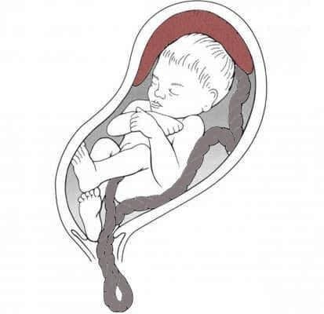
Prolapsed cordPlacenta
Figure 5.1.1Overt cord prolapse: loop of cord through the cervix below the presenting part after ROM
Why the fetus suffers
Two things stop flow in the cord: compression between the presenting part and the pelvis, and vasospasm of the umbilical arteries from cold, drying and handling. Result: acute fetal hypoxia; death or brain injury within minutes if birth is delayed.
Typical case: labour going well, membranes rupture (or ARM), then sudden fetal bradycardia or variable decelerations. Mother is well, no pain beyond labour, no bleeding, liquorclear.
Vaginal examination: cord felt in the vagina or seen at the vulva. Pulsating cord = fetus alive. Do a VEat once after any ROM followed by an abnormal FHR.
Clinical picture
Cord prolapse
ROM+sudden FHR drop+mother well=Cord prolapse
Distinguishing features · After ROM, which one?
Mother well, clear liquor, FHR 70Cord prolapse
Mother well, fresh bleed, FHR 70Vasa praevia
Pain, hard uterus, shockAbruption
Collapse, cyanosis, then bleedingAmniotic fluid embolism
5. Investigations
Diagnosis is clinical. If the cord does not pulsate, check the heart by Doppler or bedside scan; a still cord may be in spasm, not dead. Do not wait for any other test.
Hands off the cord: handling and cold cause spasm. Do not try to push it back into the uterus. If it is outside, tuck it gently into the vagina.
Elevate the presenting part: two fingers push the head or breech up and stay there until the baby is delivered. For a long transfer, fill the bladder with 500 mL warm saline by Foley, clamp it, and empty it before the uterine incision.
Position:knee-chest, or exaggerated left Sims (left lateral, pillow under the hip, head down) for transfer. Gravity takes the fetus off the cord.
Tocolysis:terbutaline 0.25 mg SC stops contractions pressing the head on the cord; expect a softer uterus and more bleeding at CS.
Figure 5.1.2Knee-chest position: hips above the chest, so the fetus falls back off the cord
Hospital protocol
Health centre or home birth: call the ambulance, keep the hand in the vagina pushing the part up, or fill the bladder, and transfer in exaggerated left Sims (knee-chest is unsafe in a moving car). Send a note: time of prolapse, FHR.
Clinical picture
First step after diagnosis
Call help+push part up+knee-chest=Buy time for CS
Distinguishing features
Cord out of the vulvaTuck into vagina, wet swab
Transfer by ambulanceFill bladder, Sims
Cord still, heart seen on scanAlive: spasm, go on
Strong contractions, FHR 80Terbutaline SC
Clinical scenarios
ARM at 5 cm, FHR falls to 80, loop of cord in vagina. Best first action?
Call help; push the head up and keep it up.
Bladder filled for cord prolapse. What before the uterine incision?
Unclamp and empty the bladder.
8. Management: route of delivery
DECIDE BY · fetus alive or dead, gestation, stage of labour, presentation.
Alive, 1st stage
Category 1 CS, decision to delivery ≤ 30 min; GA, or spinal if it is quick
Alive, fully dilated
Vertex, head low, quick birth likely: forceps or ventouse in the room
Fully dilated, head high
Head not engaged or transverse lie: caesarean
Second twin
Breech extraction, or ventouse if cephalic, at full dilatation
Dead fetus (scan)
Vaginal: await labour or induce; no CS for the baby
Pulsating cord, fully dilated, head +2Forceps or ventouse
Fully dilated, transverse lieCaesarean
Cord not pulsating, scan: no heartVaginal delivery
Cord felt, membranes intact, termNo ARM: CS
Clinical scenarios
Pulsating cord prolapse at 4 cm. Best management?
Category 1 caesarean section.
Cord prolapse, fetal heart absent on scan. Route?
Vaginal delivery.
9. Management: after birth
Neonatal team at delivery: asphyxia, HIE, cerebral palsy; assess the baby after any instrumental birth
Cord blood gases · active management of the 3rd stage: PPH risk after tocolysis, CS or instruments
Debrief the mother; document times (prolapse, decision, delivery)
10. Management of cord presentation
Cord felt through intact membranes: do not do ARM; abandon an ARM if the cord is felt. Preterm: conservative, rest, watch. Term: counsel; two options (wait or elective CS), but most end in caesarean, as the cord prolapses once the membranes go. In labour: caesarean.
11. Prevention
No ARM with a high head. If ARM is needed (polyhydramnios, unstable lie), do a controlled ARM in theatre: head held at the brim, liquor let out slowly
Admit unstable lie from 37 wk · scan lie before induction or ARM
After ECV or internal version: check for cord below the part
VE after every ROM in a woman at risk, and listen to the FHR at once
Exam case
Labour going well, membranes rupture, mother stable, clear liquor, CTG turns pathological (prolonged deceleration). The midwife's VE finds a pulsating loop of cord. Answer: cord prolapse. First: help, push the part up, knee-chest. Then: 1st stage → CS; 2nd stage, head engaged → instrumental; dead → vaginal.
Chapter 6 · 6.1 Normal PuerperiumDefinition & Physiological Changes173
6.1Normal Puerperium
1. Definition
Puerperium = the time from delivery of the placenta until the genital organs return to the non-pregnant state: about 6 weeks (42 days). Immediate = first 24 h (PPH, eclampsia) · early = to day 7 · remote = to 6 wk. Its main dangers: sepsis, haemorrhage, VTE, mood disorders.
2. Physiological changes: the genital tract
Involution · the fundus falls about 1 cm (one finger) a day; a uterus still felt above the pubis after day 14 = subinvolution.
Organ
What happens
Uterus
Firm, at the umbilicus after birth. Contraction kinks the vessels ("living ligatures") and stops bleeding. Muscle cells shrink by autolysis; they are not lost. Oxytocin from suckling speeds it (after-pains)
Endometrium
Decidua necroses and sheds as lochia; new lining grows from the basal layer by day 10. The placental site heals last (≈ 6 wk) by exfoliation, without a scar
Cervix
Admits 2–3 fingers for 4–6 days, 1 finger by day 10–14. External os stays a transverse slit (parous os)
Vagina, perineum
Oedema settles in days; rugae return by 4 wk (less than before). Hymen tags = carunculae myrtiformes
Clinical picture
Normal involution
Umbilicus day 1+− 1 cm a day+gone by day 14=Normal
Clinical scenarios
Day 7 after a normal delivery. Where should the fundus be?
About midway between umbilicus and pubis.
From which layer does the endometrium regenerate after birth?
Chapter 6 · 6.1 Normal PuerperiumDefinition & Physiological Changes174
3. Lochia
Type
Days
Colour and content
Rubra
1–4
Red: blood, decidua, vernix, lanugo
Serosa
5–9
Pink-brown: less blood, serum, leucocytes
Alba
10 → 3–6 wk
Yellow-white: leucocytes, mucus, epithelial cells
Normal lochia
Smell is stale, not foul. Amount falls day by day. Total about 250 mL. Heavier on standing and when feeding.
Abnormal lochia
Foul → infection. Red again or persistent rubra → retained tissue, subinvolution. None + fever → blocked drainage (lochiometra).
Distinguishing features · Lochia
Red, day 2, smells staleNormal rubra
Pink-brown on day 7Normal serosa
Red again at day 12, bulky uterusRetained tissue
Foul lochia, tender uterus, feverEndometritis
4. Physiological changes: other systems
System
Change and why it matters
Heart, circulation
Cardiac output rises immediately after birth (autotransfusion from the contracted uterus) → heart disease decompensates now. Diuresis brings plasma volume to normal by 2–3 wk
Blood
WBC up to 20–25 × 10⁹/L in the first days: not infection by itself. Clotting factors stay high → hypercoagulable for 6 wk (VTE)
Urinary
Diuresis day 2–5. Oedematous, numb bladder (epidural, tears) → retention: void within 6 h. Ureters normal by 6–8 wk
Temperature
Slight rise in the first 24 h (exertion, dehydration) is normal; ≥ 38 °C is never "normal"
Bowel, weight
Constipation: fasting, pain, fear of stitches, opioids · ≈ 5–6 kg lost at birth, more with diuresis
Hormones
hPL, hCG gone by day 10 · oestrogen, progesterone non-pregnant by day 7 · prolactin high only if breastfeeding
Mood
"Blues" in up to 80% on day 3–5; settles by 2 wk
Clinical scenarios
Mitral stenosis, recently delivered. Why is she at highest risk now?
Autotransfusion from the uterus raises cardiac output.
Day 2, WBC 18 × 10⁹/L, afebrile, well. Next step?
Reassure: normal postpartum leucocytosis.
5. Return of ovulation and menses
Not breastfeeding
Ovulation as early as day 25; menses at about 6–8 wk. So no contraception needed before day 21, but start by then.
Breastfeeding
Prolactin blocks GnRH pulses → no ovulation for months. But ovulation comes before the first period: she can conceive without a period.
Heavy bleeding (a pad soaked in < 1 h, clots) · fever, foul lochia · severe headache, blurred vision, fits · breathlessness, chest pain · calf pain, swollen leg · severe abdominal pain · red painful breast · wound pus · thoughts of harming herself or the baby.
Clinical picture
Anti-D after birth
RhD-neg mother+RhD-pos baby+not sensitised=500 IU in 72 h
Yes, MMR before discharge; breastfeeding is not a bar.
RhD-negative mother, baby RhD-positive, born today. What and when?
Anti-D 500 IU IM within 72 h + Kleihauer.
10. Advice
Early walking (VTE, bladder, bowel) · pelvic floor exercises · fibre and fluids · perineal hygiene, hand washing before and after pad change · rest and good diet · intercourse when lochia stops and the perineum heals · space the next pregnancy ≥ 24 months.
11. The rules (WHO)
Start within 1 hour of birth, skin to skin · exclusive for 6 months (no water, no sugar water) · on demand, 8–12 feeds a day · continue with family foods to 2 years. Caesarean section is no reason to delay.
Good attachment: mouth wide open · chin touches the breast · lower lip turned out · more areola seen above the mouth than below · slow deep sucks, no pain.
Chapter 6 · 6.1 Normal PuerperiumManagement: Breastfeeding178
14. Stopping lactation
After stillbirth, IUFD or neonatal death, or when breastfeeding is contraindicated: supportive bra, cold packs, analgesia, no expressing · drug of choice cabergoline 1 mg orally once within 24 h of birth. Avoid in pre-eclampsia or hypertension (vasoconstriction). Bromocriptine and high-dose oestrogen are no longer used (stroke, MI, VTE).
Hospital protocol
Grandmothers may give water, sugar water or dates before the milk comes in: explain that colostrum is enough and extra fluids bring diarrhoea and less milk. Help with the first feed in the delivery room.
15. Breastfeeding problems
Problem
Clue
Management
Engorgement
Day 3–5, both breasts hard, low fever
Feed often, express, warm before / cold after, paracetamol
Cracked nipples
Pain on feeding: poor attachment
Correct the latch; rub hindmilk on nipple; rest and express if severe
Blocked duct
Tender lump, mother well
Feed from that side first, massage
Mastitis
Red wedge, fever, flu-like, week 2–3 · S. aureus
Keep feeding; flucloxacillin 500 mg 6-hourly × 10–14 d (6.2)
Breast abscess
Fluctuant tender mass, fever persists
Ultrasound, aspiration or I&D; feed from the other side
Usually poor attachment or few feeds: fix these first
16. Postnatal contraception
When to start · dark = can start · pale = possible with conditions · red = avoid.
LAM: all three rules
(1) No period since birth · (2) full or nearly full breastfeeding, day and night (gaps ≤ 4 h by day, ≤ 6 h at night) · (3) baby < 6 months → 98% protection. Any rule broken → start another method.
Chapter 6 · 6.1 Normal PuerperiumBreast Problems & Contraception179
16. Postnatal contraception (continued)
Why these timings:oestrogen reduces milk and adds to postpartum VTE risk → COC from day 21 if not breastfeeding, after 6 months if breastfeeding · IUD between 48 h and 4 wk → expulsion and perforation of the soft uterus · tubal ligation: at CS or within 7 days (mini-laparotomy), else interval after 6 wk; counsel: permanent.
Progestogen methods (POP, implant, DMPA, LNG-IUS) do not reduce milk: first choice while breastfeeding. DMPA may delay return of fertility for up to a year. A copper IUD can also be placed at caesarean section, after the placenta.
Clinical picture
LAM works
No period+full breastfeeding+baby < 6 months=98% protection
Distinguishing features · Best method
Exclusive BF, 3 mo, no periodLAM is enough
Breastfeeding, wants a pill nowProgestogen-only pill
Not breastfeeding, day 21COC can start
Wants IUD on day 10Wait until 4 wk
Clinical scenarios
Breastfeeding mother at 6 wk asks for the combined pill. Advice?
Avoid until 6 months; offer POP, implant or IUD.
LAM user, baby 4 months, starts solid foods. What now?
Chapter 7 · 7.1 The OSCE StationStation Types & the 5-Minute Plan199
7.1The OSCE Station
1. What an OSCE is
Objective structured clinical examination: a circuit of short stations. Every student gets the same task, the same patient or model and the same checklist. The examiner watches and ticks. Marks = checklist steps + a global score (attitude, communication, safety).
Chapter 7 · 7.1 The OSCE StationStation Types & the 5-Minute Plan200
4. Before you knock
Read the task twice. Who, how many weeks, and the verb: history, examine, counsel?
Note what is given (model, chart, result) and any "do not" line.
Run the checklist in your head: opening → task → closing.
Knock, enter, greet the patient first.
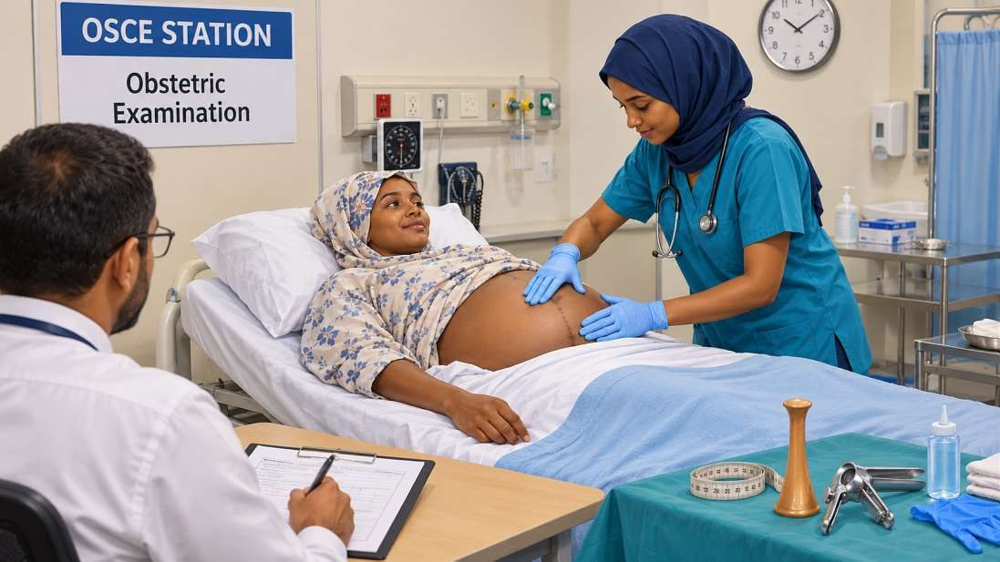
Figure 7.1.1OSCE station: patient, student, silent examiner with checklist
Where students lose easy marks
No hand hygiene or consent · doing more than asked · talking to the examiner, not the patient · rough with the model · no summary · a 2-minute opening.
5. Universal Opening & Closing
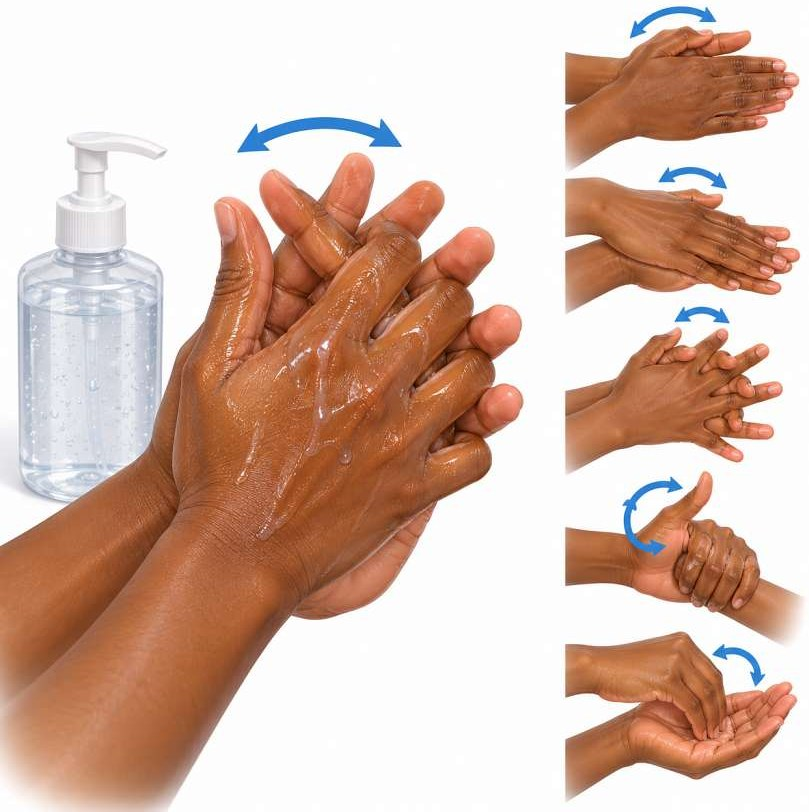
a
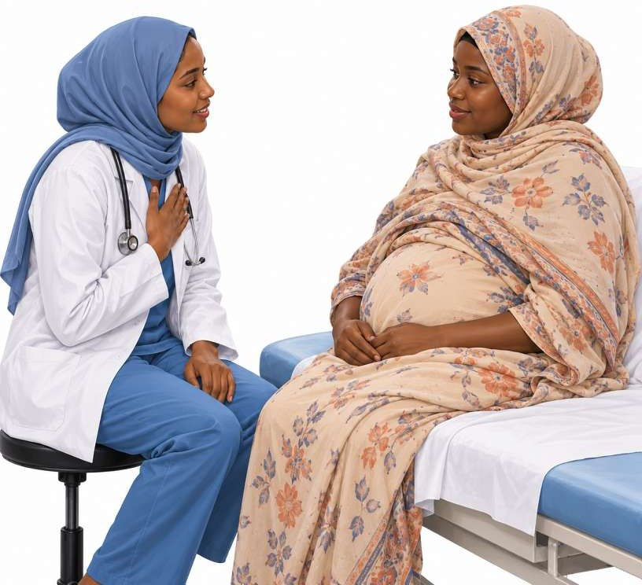
b
c
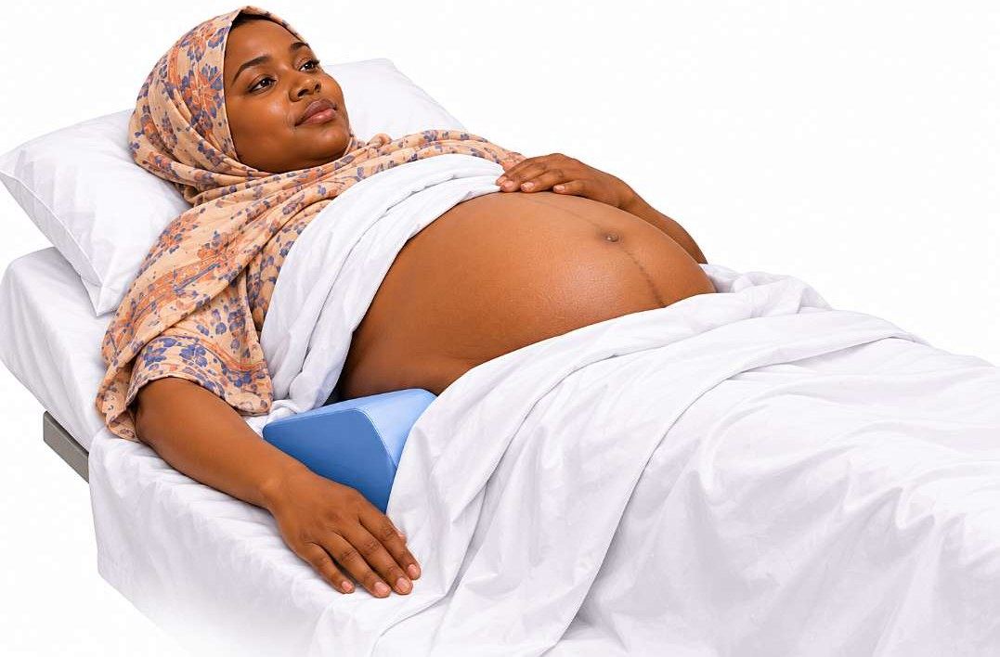
d
Figure 7.1.2 (a) Hand rub: palms, backs, fingers, thumbs. (b) Greet: eye level, smile. (c) Chaperone: female nurse present. (d) Drape: only the abdomen bare.
The same opening and closing start and end every station with a patient. They carry easy marks and take 30 seconds each.
Step
ماذا تقول
Opening البداية
1
Hand hygiene: alcohol rub
2
Greet her, smile, eye contact
السلام عليكم، صباح الخير.
3
Introduce yourself: name and role
أنا (الاسم)، طالب في كلية الطب.
4
Identify her: full name + age
ممكن أعرف اسمك الكامل وعمرك؟
5
Explain what and why, plainly
حأسألك شوية أسئلة عن الحمل، عشان نطمئن عليك وعلى الجنا.
6
Consent; she may stop any time
موافقة؟ ولو دايرة نوقف في أي وقت، قولي لي.
7
Chaperone for intimate exams
الممرضة حتكون معانا طول الكشف.
8
Privacy: door, curtain, cover
حأقفل الستارة عشان تكوني مرتاحة.
9
Comfort: pain? bladder empty?
عندك ألم هسه؟ فضّيتي المثانة (مشيتي الحمام)؟
10
Position; expose only what you need
ممكن ترقدي على ضهرك؟ حنكشف البطن بس، والباقي مغطّى.
Closing الختام
11
Cover her, help her up, thank her
شكراً ليك، خلصنا. اتفضلي اتغطّي.
12
Summarise in plain words
يعني باختصار: الضغط عالي شوية، والجنا كويس.
13
Questions? Did she understand?
عندك أي سؤال؟ في حاجة ما واضحة؟
14
Safety-net: when to come at once
لو حصل نزيف أو نزلت موية أو حركة الجنا قلّت، تعالي المستشفى طوّالي.
15
Hand hygiene, document
16
Turn to the examiner: present (7.1, Presenting findings)
Chapter 7 · 7.1 The OSCE StationUniversal Opening & Closing201
5. Universal Opening & Closing (continued)
Hospital protocol
A male student always has a female chaperone for breast, abdominal or vaginal examination, and asks before the woman uncovers. If she prefers a female doctor, respect it. Speak to her, even when her mother or husband answers.
Distinguishing features · What the patient does
She looks anxious, hands shakingName it: "You look worried"
She says she is in painAsk first, examine gently
She refuses the examRespect it, explain, offer later
Husband answers for herThank him, ask her again
She speaks only a local languageTrained interpreter, not a child
Viva questions
Why check two identifiers before a station task?
Right patient: wrong-patient errors cause harm (wrong blood, wrong drug).
Why ask about the bladder before abdominal exam?
A full bladder raises fundal height and makes palpation painful.
Chapter 7 · 7.1 The OSCE StationBreaking Bad News & Consent203
9. Breaking bad news: SPIKES (continued)
Step
ماذا تقول
I
Invitation: how much detail she wants
تحبي أشرح ليك النتيجة بالتفصيل؟
K
Knowledge: warning shot, pause, then the fact in plain words; no "passed away" vagueness
للأسف عندي خبر ما كويس... قلب الجنا وقف.
E
Emotion: silence, tissues, name the feeling; let her cry
أنا آسف جداً. ده خبر صعب، خدي وقتك.
S
Strategy: what happens next, summary, when you will meet again
ما مستعجلين. حنتكلم سوا عن الخطوة الجاية.
Exam trap
Do not give the news in the corridor, standing, or while busy with the scan probe. Do not fill the silence with numbers. Do not say "it is God's will" or "you can try again" before she has taken in the news: let her lead.
Distinguishing features · What she does
She goes silentWait; do not fill the gap
She denies: "the scan is wrong"Offer a second scan, gently repeat
She is angry at staffAcknowledge, do not argue
She refuses a CS after counsellingRespect, document, keep caring
Husband asks you to hide the newsShe has the right to know
10. Informed consent
Capacity: she understands, retains, weighs and tells her choice
Chapter 7 · 7.1 The OSCE StationPresenting Findings & the Viva204
11. The presenting formula
Face the examiner, stand still, speak in full sentences. Under a minute. Positives that build the diagnosis, then the negatives that matter (red flags you asked about and found absent).
Present it · a history
"Amna, a 24-year-old primigravida at 34 weeks by dates, came with headache for 2 days. She also has blurred vision and epigastric pain. No fits, no bleeding, and the baby moves well. No hypertension or kidney disease before pregnancy; her mother had pre-eclampsia. My impression is severe pre-eclampsia; the main differential is chronic hypertension with superimposed pre-eclampsia. I would check her BP, urine protein, platelets, liver and kidney tests, and the baby's well-being."
Present it · an examination
"She looks well, not pale, BP 150/100. The abdomen is distended by a gravid uterus, fundal height 33 cm, matching 34 weeks. Singleton, longitudinal lie, cephalic presentation, 3/5 palpable. Fetal heart 140 per minute, regular."
Present it · a data result
"This is the CTG of Amna, 39 weeks, recorded today for 30 minutes. Baseline 140, variability 5–25, accelerations present, no decelerations, 3 contractions in 10 minutes. This is a normal CTG; I would continue routine monitoring."
12. Answering the viva
Question
Start your answer with
"Define…"
One sentence with the numbers (≥ 140/90 · after 20 wk · protein ≥ 300 mg/24 h)
"Causes?"
A frame: maternal · fetal · placental, or common → dangerous
"Investigations?"
Bedside → blood → imaging → fetal well-being
"Management?"
Resuscitate first (call for help, ABC), then specific treatment, then delivery plan, then prevention
"Next step?"
One action, the safest one now
You do not know
Say so honestly, then give the safe principle; never invent a dose
Unsafe acts fail the station, whatever the points
Digital PV in APH before praevia is excluded · ergometrine in hypertension or heart disease · a pregnant woman left flat on her back (supine hypotension) · a wrong drug dose said with confidence · leaving her exposed.
Distinguishing features · How to open
Data station: CTG, partogramName, date, then describe
Spotter: an instrumentName → use → one fact
Emergency question"Call for help, ABC"
Examiner says "Anything else?"One more relevant point, then stop